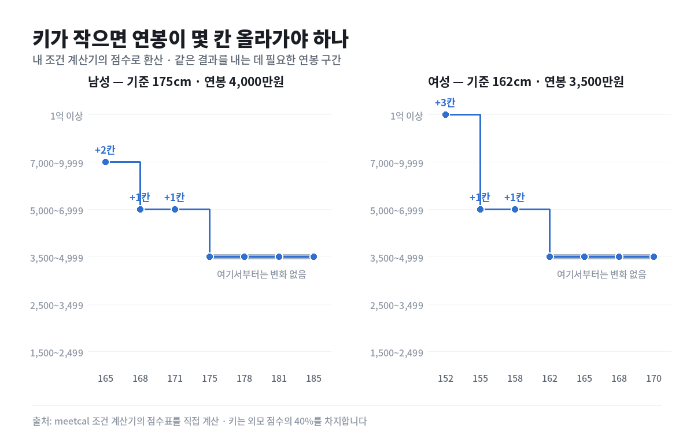

키 10cm는 연봉 두 칸 — 제 계산기를 제가 뜯어봤습니다
"키는 연봉으로 메꾸면 된다"는 말이 있습니다. 메꿔진다면 얼마나 메꿔지는 걸까요. 제가 만든 계산기라 점수표를 열어 볼 수 있어서, 직접 계산해 봤습니다.
결론부터
- 175cm · 연봉 4,000만원인 남성이 165cm라면, 같은 결과를 내는 데 연봉이 두 칸 올라가야 합니다 — 7,000만원대까지
- 170cm 근처라면 한 칸, 5,000만원대입니다
- 그런데 평균 이상은 아무 보상이 없습니다. 178cm든 185cm든 계산기가 내놓는 답은 같습니다

어떻게 계산했나
이 계산기는 여섯 항목(나이·연봉·자산·학력·외모·신체)을 각각 0~100점으로 환산합니다. 키는 그중 외모 점수의 40%를 차지하고, 나머지 60%는 BMI입니다.
그러니까 키가 줄면 외모 점수가 그만큼 깎이고, 그 깎인 점수를 연봉 점수로 메꾸려면 연봉이 얼마여야 하는지를 거꾸로 풀면 됩니다. 위 그래프가 그 답입니다.
| 남성 (기준 175cm · 4,000만원) | 필요한 연봉 구간 |
|---|---|
| 165cm | 7,000~9,999만원 (+2칸) |
| 168cm | 5,000~6,999만원 (+1칸) |
| 171cm | 5,000~6,999만원 (+1칸) |
| 175cm 이상 | 3,500~4,999만원 (그대로) |
| 여성 (기준 162cm · 3,500만원) | 필요한 연봉 구간 |
|---|---|
| 152cm | 1억원 이상 (+3칸) |
| 155cm | 5,000~6,999만원 (+1칸) |
| 158cm | 5,000~6,999만원 (+1칸) |
| 162cm 이상 | 3,500~4,999만원 (그대로) |
직접 넣어 보세요
입력값은 브라우저 안에서만 계산되고 어디로도 전송되지 않습니다.
두 번째로 나온 것 — 제 계산기의 눈금이 거칩니다
그래프 오른쪽을 보시면 선이 평평합니다.
178cm도, 181cm도, 185cm도 전부 같은 칸입니다. 키가 10cm 더 커져도 계산기가 내놓는 이성 조건은 한 글자도 안 바뀝니다. 여성 쪽도 162cm 위로는 똑같이 평평합니다.
왜 이렇게 됐냐면, 연봉 점수표가 일곱 단계뿐이기 때문입니다.
1,500 미만 / ~2,499 / ~3,499 / ~4,999 / ~6,999 / ~9,999 / 1억 이상
한 칸의 폭이 1,500만원에서 3,000만원까지 됩니다. 키에서 얻은 점수가 그 칸 하나를 넘길 만큼 크지 않으면 결과가 그대로인 거죠. 키는 외모의 40%일 뿐이라 웬만해선 못 넘깁니다.
이건 제 계산기의 한계입니다. 평균 이하에서는 계단이 가파르게 작동하는데 평균 이상에서는 아예 작동하지 않으니, 키가 큰 쪽의 이점을 이 계산기는 표현하지 못합니다. 눈금을 더 잘게 쪼개면 해결되지만, 그러면 결과가 100만원 단위로 흔들려서 "내 분수"라는 원래 취지와 멀어집니다. 지금은 거친 쪽을 택해 뒀습니다.
솔직히 말씀드리면
위 숫자는 이 계산기의 점수 체계 안에서의 교환비입니다. "현실에서 키 10cm가 연봉 3,000만원의 값어치가 있다"는 뜻이 아닙니다. 그런 걸 잰 연구가 아닙니다.
점수표 자체도 대한민국 통계 분포를 참고해 제가 정한 것이고, 가중치(키 40% / BMI 60%)도 제 판단입니다. 다른 가중치를 쓰면 다른 교환비가 나옵니다.
그래서 이 글은 "세상이 이렇다"가 아니라 "제 계산기가 이렇게 생겼다"는 이야기에 가깝습니다. 계산기를 쓰시는 분이 그 안을 들여다볼 수 있는 게 맞다고 생각해서 열어 뒀습니다.
한계
- 여섯 항목 중 키·연봉만 움직이고 나머지는 고정한 계산입니다.
- 연봉 점수표는 7단계, 키 점수표는 남성 10단계·여성 8단계입니다. 구간 경계에서 결과가 뚝 끊깁니다.
- 기준값(남성 175cm/4,000만원, 여성 162cm/3,500만원)을 바꾸면 칸 수도 달라집니다.